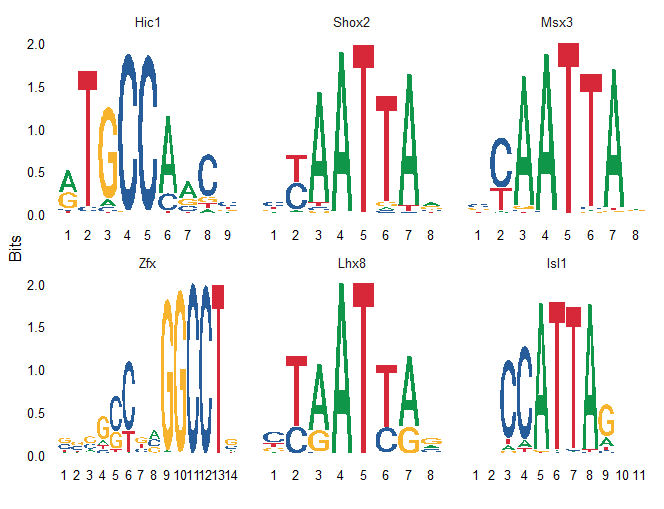

Gene set enrichment analysis
ATAC-seq data peaks represent open chromatin regions. Open chromatin regions can represents locations on chromatin were a transcription factor was going to bind at time of sequencing.
This means that if we look at all AA-motifs of the peaks that explain the most variance (peaks that are in the first X factors of our MOFA analysis), we could use the weights that the model has given those motifs to go through
a certain database and see if any motifs are enriched for a certain transcription factor. If you then find a transcription factor motif that is significantly enriched, you've found
an active transcription factor in your cells that explain a lot of the variation within those cells, which is biologically always interesting, since transcriptionfactors say a lot about biological situation a cell is in.
For this ofcourse you need a database of prevalent motifs. For this analysis we chose to create a motif matrix from the JASPAR2020 database, for each organisms seperately.

Plotted here is an example of the positively enriched motifs in our human dataset.